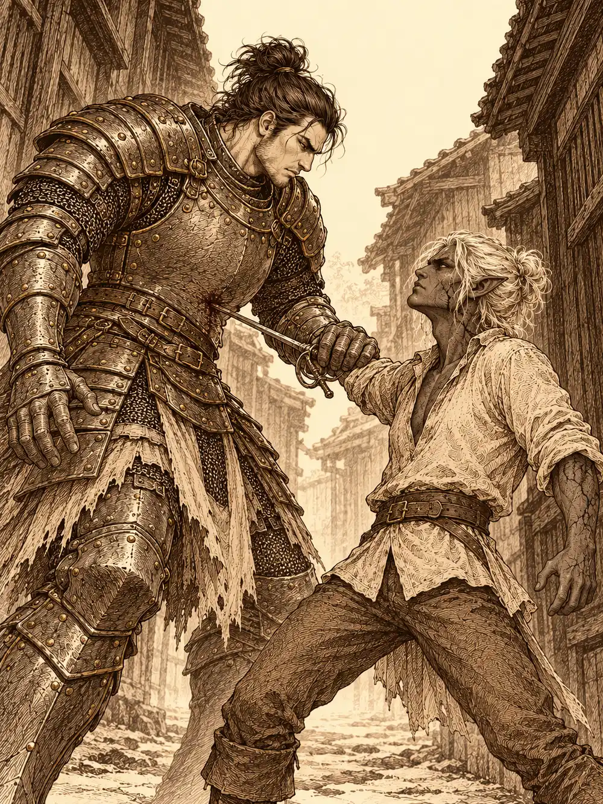

Capítulo 123
La importancia de la economía
Libro VIII · El hilo maldito
Archi había convertido la mesa grande de la base en un taller. Sobre ella extendió un mapa de Kuroto con runas engarzadas en las cuatro esquinas, un cristal del tamaño de un puño en el centro y un puñado de piedrecitas repartidas al azar. Guxi lo miraba por encima del hombro, convencido de que con aquella cantidad de energía algo iba a explotar.
"Esto no explota, joven Guxi. Esto va a revolucionar militarmente esta isla".
Calista se acercó con curiosidad y el gnomo le puso en la mano una piedra del tamaño de una uña. Le dio un golpecito con un martillo diminuto que le salió del guante, y ella notó que la piedra quedaba imbuida de algo.
"Cada soldado del ejército llevará una como esta. Con las palabras adecuadas, el cristal del centro sabrá dónde está cada uno, y el mapa los señalará con puntos verdes si siguen en pie y rojos si no".
De momento solo funcionaba con una piedra, admitió. Para más hacían falta materiales que en la isla escaseaban, y dinero. Calista vio la oportunidad enseguida y le ofreció financiarlo, si le dejaba el prototipo. Archi se llevó el mapa al pecho como a un hijo. Aquel ejemplar no se separaba de él.
Guxi, mientras tanto, se había llevado a Gelbreak aparte. Quería los papeles de su maestro, los que necesitaba para recuperar su puesto. El drow tardó en contestar.
"Me robaron la bolsa el otro día, en la pelea en la que me metió Banzo. Un mediano salió corriendo con ella. Cuando la recuperamos, las cosas estaban por el suelo".
"¿Y las recogisteis?".
"Yo recogí lo que había. Banzo no recogió nada".
Guxi se puso blanco. Banzo, que acababa de entrar, juró que en cuanto volviera de un viaje rápido se ocuparía; Guxi le dijo que no había tiempo para viajes, y el goliat acabó saliendo a buscar por los barrios bajos. No llegaron a saber qué encontró, porque en ese momento llamó a la puerta una mensajera de kimono ajustado que caminaba a pasitos cortos. El señor Yuichi reclamaba en su residencia a la señorita Calista y al señor Guxi. Había banquete.
La mensajera los guio hacia las calles altas del norte de Sho, donde había más soldados y las casas se separaban unas de otras con grandes jardines. Pasaron por delante de la residencia de Yasuoka. La de Yuichi no era la más grande, pero sí la más lujosa.
En la entrada esperaba otro invitado: un hombre de mediana estatura, tez muy blanca, pelo blanco y unas marcas bajo los ojos como un símbolo. Calista lo conocía de vista de alguna reunión.
"Me han contado que usted está ahora al mando de los cazadores", le dijo él.
"Solo me encargo de la administración y los papeles".
"Le agradezco su labor por salvar Kuroto. Mi nombre es Kazuki Noen".
A Guxi le estrechó el antebrazo como un soldado. Contó que pertenecía a la nobleza de otro plano, que vivía casi siempre en el Feywild con su esposa, con la que había formado la guardia de su reino, y que lo que había oído de los cazadores lo había empujado a querer ayudar contra la crisis. Ofreció buscarles apoyos, económicos y políticos. No dijo ser cazador.
Archi, que se había apuntado al oír la palabra banquete, deslizó a Ralph por el recibidor después de volverlo invisible, con órdenes de buscar pequeños objetos de valor. Nadie supo aquella noche qué encontró.
Yuichi los recibió con regalos. A Guxi le dio unos planos antiguos con mejoras para armas y armaduras, y Archi se puso de puntillas tirándole de la ropa para verlos. A Calista le entregó una botella que parecía haber pasado años bajo el agua, con un licor blanco de su tierra. A Kazuki, una botella de sake del año en que había nacido. Calista correspondió con una cajita con dos anillos para el matrimonio; el anfitrión la abrió, la cerró y se la pasó a su mujer sin mucha emoción.
"Me alegro de que os hayan gustado", dijo después, con una sonrisa que le llegaba de oreja a oreja. "Ahora tenéis algo mío. Y eso siempre es bueno".
Gelbreak se acercó a Calista y le dijo al oído lo que ella ya pensaba. Ahora le debían algo.
La casa era una exhibición. Oro en las mesas y en las sillas, sirvientas que recogían cualquier cosa en cuanto tocaba el suelo, y en las paredes pinturas y documentos enmarcados. Una gran pintura mostraba el combate contra Otakemaru de hacía más de mil años.
"Espero conseguir otra para esa pared", dijo Yuichi. "Y que salgáis vosotros".
Calista y Kazuki reconocieron en uno de los tratados colgados el sello de un shogun anterior: era el acuerdo por el que el norte, Hakara y sus tierras, se había unido al shogunato. Guxi tomaba notas de todos los contratos que veía, también de los que trataban de las carreteras de Sho. En un aparte habló con un noble llamado Wakayama, que se declaró partidario de Rua; quería que la elección se resolviera pronto para poder hacer frente a la criatura del sur. Guxi le explicó que los cazadores eran una fuerza independiente y que cada uno decidiría su voto. Kazuki, por su parte, advirtió a Calista de que aquellos regalos tenían intención. Ella le contestó que solo le importaba el futuro de Kuroto.
Hubo un momento extraño en que la noche, de golpe, se iluminó como si fuera de día. Gelbreak aprovechó el desconcierto para volverse invisible a sí mismo y a Calista y buscar el despacho del anfitrión. Al abrir una puerta, una aguja salió disparada y se le clavó; aguantó el dolor sin perder el hechizo. Detrás solo había habitaciones. Archi, que podía verlos, aceptó entretener a Yuichi hablándole de una alianza económica. Kazuki también se escabulló con otro aspecto, la piel roja, cuernos y un uniforme, y se hizo invisible; solo oyó murmullos y alguna referencia vaga a notas o diplomas. Guxi, en el salón, charlaba con la esposa de Yuichi sobre negocios y sobre su expulsión del shogunato.
Cuando el anfitrión llamó a cenar, Calista y Gelbreak estaban escondidos en un baño. Archi entretuvo a una sirvienta el tiempo justo para que salieran y se sentaran como si nada. No habían encontrado el despacho. No se llevaban ni un papel.
"Me gusta ir al grano", anunció Yuichi a los postres. "En los negocios, si quieres algo, lo coges. Así que os lo preguntaré sin rodeos. ¿Cuál es el precio de la lealtad de los cazadores? ¿Y la del señor Kazuki?".
Calista sostuvo la mirada. Si sus negocios eran en beneficio de toda la gente de Kuroto, no tendría a los cazadores en contra, dijo; pero intentar comprar la lealtad era un poco osado. Guxi, con un muslo de pollo en la boca, contestó que su lealtad no estaba con nadie en aquel momento.
"La seguridad nunca tiene precio", dijo Kazuki. "Y yo seré fiel a Rua. Ayudó a mi familia cuando cruzamos el portal por primera vez".
"Usted no es noble regente de aquí. Su voto vale poco".
"Todo voto cuenta, aunque sea poco".
Yuichi les preguntó después qué negocio abrirían si les diera una buena suma, cuando acabaran la guerra y la crisis. Guxi quería escuelas para todo el mundo: un pueblo inculto no sabe defenderse ni de sí mismo. Kazuki, una academia para que los novicios mejoraran deprisa. Calista habló de rutas marítimas. El anfitrión solo vio negocio en lo de ella. La educación, dijo, tendría que ser para unos pocos, porque hacía falta gente para los trabajos menos rentables. Y los barrios bajos, que él no pisaría nunca, habría que exterminarlos de una vez.
"Una última pregunta. Me gusta la estabilidad, y nada es estable ahora. Si os ofrecieran una gran suma por traicionar a un rey, ¿lo haríais?".
Guxi dijo que su compromiso se ganaba con actos. Kazuki se negó en redondo. Archi, al que Yuichi también quiso oír, contó que en su ciudad había vivido treinta y tres intentos de golpe de Estado y que él siempre se ponía del lado donde se inclinaba la balanza del dinero. Calista respondió que no traicionaría a quien velara por la estabilidad de Kuroto, aliado de su reino; si otro gobernante fuera a hacer mejor el país, quizá sí.
"No quiero ningún golpe de Estado", sonrió Yuichi. "Y menos que decapiten a nadie en mi salón. Solo quería saber si seríais fieles al shogunato".
A Archi le hizo preguntas sobre su ciudad del Cono Sur, tecnológicamente más avanzada que Kuroto, y sobre la idea de un puente que algún día cruzaría hasta la isla para el comercio. El antiguo shogun, dijo Yuichi, restringía a los extranjeros y el comercio, y él creía que Rua seguiría el mismo camino. Invitó al gnomo a visitarlo otro día. No le prometió nada más.
Al despedirse, Gelbreak, que había pasado toda la noche sin dirigirle la palabra a un noble, se adelantó por fin y le hizo una reverencia de dos centímetros. Se presentó como segundo hijo de la segunda casa de una ciudad drow cuyo nombre Yuichi no había oído nunca.

"Espero que no lo sepa nunca", añadió, y sonrió.
Archi sí reconoció el nombre: la mayor ciudad drow del oeste de Brunami, de las que más valía no visitar. Yuichi le prometió a Calista otra reunión antes de la votación. Volvieron a casa con regalos y ninguna firma.
Días después, Calista entró en la base cargada de notas sobre la luna. Osuray salió a su encuentro con las manos a la espalda. Ella apoyó la mano en el estoque.
"No puedo haceros daño, ni a usted ni a los inocentes ni a los cazadores", le recordó él. "Y le recuerdo que en el circo la salvó Kurobane. Aun sabiendo su secreto".
Le dijo que no tenía buena cara, que se notaba que no dormía. Calista jugueteaba con un anillo en la mano del estoque, y él lo vio. Ella pidió ver a Kurobane, y las sombras fueron retirándose hasta que los ojos volvieron a ser rojos.
"¿Para qué me necesita?". El muchacho tenía en la voz el dolor de una traición.
Calista le explicó que había callado para protegerlo, porque Danifae era peligrosa y había ido a amenazarla a su propia casa, y porque no quería romperle el corazón. Él le contestó que había perdido su confianza, que la había salvado por compañerismo, que le devolvería la daga que guardaba de ella. Cuando ella se echó a llorar, el muchacho le puso la mano en el hombro.
"Nadie puede decidir lo que hace otro. Yo elegí ayudarla y lo seguiré haciendo. Pero necesito que a partir de hoy sea totalmente sincera conmigo".
Ella le dijo que estaba cansada de ver morir gente delante de ella, que quería ser quien protegiera a los demás. Se abrazaron y lloraron los dos. Antes de separarse, él le preguntó qué había visto en Gelbreak. Calista habló de una libertad que no había visto nunca, de alguien que se había sobrepuesto al control y no rendía cuentas a nadie, de aquella sonrisa engreída.
"Me alegro de que tenga a alguien así para su futuro", dijo él.
Entonces los ojos se le oscurecieron. Osuray volvió, burlón, y le aseguró que solo había una forma de sacarlo de aquel cuerpo, y se pasó un dedo por el cuello. Calista sacó el abanico de mando, que relucía a la luz de la luna, y le dijo que había muchas formas de separar dos almas. La sombra se rio y se retiró a su cuarto.
Al salir, Calista chocó con Inugami, el yokai perro que había venido por su carta. Le enseñó el cristal del portal, quebrado desde que Maroxi lo había usado en un ritual. Traer otro de las lejanas tierras de Ashenoth llevaría meses; mejor repararlo. Había que cerrar todas las grietas a la vez, y después él le devolvería el poder con su magia. Le dejó instrucciones escritas y dibujos, le advirtió del peligro de sobrecarga y se marchó convertido en perro.
Gelbreak la acompañó a la biblioteca. Allí encontraron lo que buscaban sobre la plata de Selûne: plata pura consagrada bajo la luna llena en un lugar sagrado, con una sacerdotisa de la diosa. Decidieron preguntar en el templo de Sho y buscar plata. Calista escribió a los dos artífices para que repararan el cristal lejos de la ciudad.
Archi y Guxi lo llevaron al refugio secreto del muchacho en las montañas, oculto tras una ilusión junto al río. Pasaron horas estudiando aquella piedra inestable, de rocas de Ashenoth tocadas por la nigromancia, mientras el gnomo soñaba en voz alta con usos militares y Guxi le recordaba que primero había que devolver a los cazadores su transporte. Al final se repartieron las seis grietas entre ellos y sus constructos, Ralph y Bob, y las cerraron todas a la vez. El cristal tembló, soltó un destello azul y un estruendo y se quedó quieto y apagado. No explotó nada.
Cuando iban en la carreta a buscar a Inugami, Archi y Guxi vieron salir de un restaurante a Calista y Gelbreak, relajados y despeinados. Guxi les hizo una fotografía para gastarles una broma, y la broma acabó en una discusión entre el drow y él por los papeles perdidos. Gelbreak le echó en cara no resolver sus propios problemas. Guxi le contestó que no había dejado de trabajar para nobles y cazadores. Se insultaron. El muchacho se marchó volando y, al pasar, le golpeó el hombro a Calista. Los demás siguieron hasta la taberna de Ushi.
Allí, un perro salió disparado con un trozo de carne en la boca, Archi se le echó encima y rodaron los dos por el suelo, y el perro resultó ser Inugami. Examinó la piedra, dio por buenas las reparaciones y se puso a imbuirla en el portal. Mientras esperaban, Calista le encargó a Archi dos mapas rastreadores, uno de Sho y otro de toda Kuroto, que compartieran tres señales: una azul, una morada y una roja. Volvería por ellos en unos días.
Archi, por su parte, había recibido otra oferta. Danifae lo encontró reparando una carreta vieja en el jardín y le prometió presentarle a gente con dinero que no rendía cuentas a los nobles. A cambio quería un aparato capaz de localizar ciertos objetos semejantes, sin decir cuáles. El gnomo pidió las cláusulas por escrito y le besó la mano.
Banzo había ido a Ukio. Encontró a Corco en las minas, cantando y picando, y le contó que necesitaban plata para un asunto de Eilistraee. El viejo medio orco no quería saber nada de la capital, pero en su refugio tenía plata de sobra para un buen lingote, y se la dio. Banzo le enseñó una brújula que se había llevado de la base, de las que señalan lo que uno desea de verdad, aunque a él solía llevarlo a palacio. Corco se entusiasmó: con aquello podría dar por fin con una criatura que andaba buscando, y aceptó colaborar a cambio de probarla. Quedaron en verse al amanecer.
De vuelta en Sho, Banzo corrió a palacio y entró sin avisar en los aposentos de Rua. Ella despidió a las sirvientas, contenta de verlo. Él empezó a decirle que estaba abrumado y, de pronto, sintió las hebras de la matrona tirándole de las manos hacia la Espada del Campeón. Le pidió que se apartara de él, horrorizado. No tenía ninguna espada en la mano; sus armas estaban en la puerta. Lo que recordaba era la amenaza de la matrona: cuando su cuerpo estuviera replicado en aquel plano, lo movería a su antojo y lo usaría contra Rua.
"Me iré hasta librarme de esto. Gur y Sun Gukon te protegerán". Tragó saliva. "Nadie me había hecho sentir así".
Rua no lo detuvo. Le prometió esperarlo. Al salir, Banzo vio una mano negra y oyó un susurro con la voz de la matrona reclamando a Rua.
Buscando por palacio a un guardia, se encontró a Gelbreak. Se lanzaron acusaciones hasta acabar en un callejón: la libertad del drow, la carta de su madre, quién tenía la culpa de las marcas. Gelbreak sacó el estoque. Banzo, desarmado, avanzó contra la punta hasta hundírsela en el vientre y le agarró la muñeca.
"Vamos, hazlo. Saca eso que llevas dentro. Déjamelo ver a mí también".
La piel del drow empezó a agrietarse. Calista llegó corriendo al oír el grito, los agarró a los dos y la piel de Gelbreak volvió a la normalidad. Banzo giró el cuerpo de golpe y el estoque se partió dentro de él. Calista le ordenó arrodillarse con una voz que obligaba; él se sacó la hoja y ella le cerró la herida, pero no el agotamiento. Luego le impidió a Gelbreak seguir. Banzo los culpó de todo, les tiró a los pies la plata de Corco para el ritual y se marchó tambaleándose hasta caer redondo en mitad de la calle. Gelbreak también se derrumbó de cansancio. Calista lo consoló, se besaron, le prestó su propio estoque y se fueron juntos a buscar al herrero para fundir el lingote.
Fue Kazuki quien encontró a Banzo roncando entre el callejón y la calle. Solo lo despertó un olor a comida que creó con un truco de magia. Banzo culpó de su estado a un bajón de azúcar, rechazó volver a palacio, aceptó una invitación a visitar la hacienda que el noble tenía en el norte, dio unos pasos y volvió a caer. Kazuki multiplicó su imagen y entre todas lo llevaron a rastras hasta la base.
Al despertar, Banzo subió a las montañas a buscar a sus ancestros. No le respondieron, como no le respondían desde el último sueño con la matrona. Se impuso una prueba de su tribu y escaló herido, con una liebre a su lado que resultó ser Arwen. Arriba lo encontró Guxi, volando, abatido. Banzo le contó que no había encontrado los papeles y que el ladrón era un mediano pelirrojo con una cicatriz en la nariz; quizá en las peleas clandestinas supieran de él. Le pidió, en voz baja, que lo ayudara a practicar la lectura. Leyeron juntos hasta que cayó la luz, y Guxi se fue a buscar al mediano.